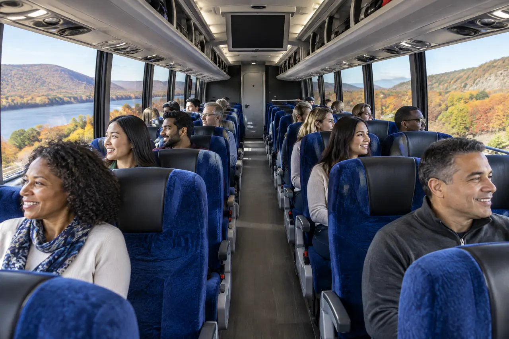

Customer Reviews
Real reviews from schools, teams, wedding couples and groups who rode with us.
All 26 reviews
- Wedding
Thank you!
We used Hudson Valley Charter Bus & Van Services for our wedding in November and we were so happy with their services! The driver was extremely professional and kind, and everything ran smoothly. Thank you for making transportation for our wedding stress free!!
Cynthia Callahan
- Group trip
bus for family event
Our driver was fantastic knew how to get around traffic and excellent driver. Office staff very helpful with setting up trip. Bus was on time very clean and comfortable
Dina Conklin
- Wedding
Wedding bus service was amazing!
We used Hudson Valley Charter Bus & Van Services to take our guests from the hotel to our wedding reception and back and it was amazing! The drivers were professional and timely and the 56 passenger bus was very spacious and clean. We highly recommend working with them!
Lisa Mathew
- Group trip
Fundraiser for Non-Profit
Just wanted to send a note of thanks! Our driver Steve was awesome! He's very professional, friendly and a very safe driver!! I've received many compliments about the trip and several were about Steve/ the bus company. I've shared Hudson Valley's information with others. It was easy to work with you coordinating the trip and I totally appreciated the prompt responses throughout the process! Please extend another huge thank you to Steve! I look forward to working with both of you in the future!
Kimberly
- Wedding
Great Wedding Bus Experience
We used Hudson Valley Charter Bus & Van Services for our wedding bus charters and it was perfect. The whole experience was very smooth. We went with one 56-person charter at first and then had to add an extra 24-person bus last minute, and we were able to do so without any issue. The drivers were on time and courteous and very accommodating - we asked the smaller bus to wait extra time to depart the venue to ensure the wedding party got all of their stuff, and the driver was happy to do so. Would definitely use Hudson Valley Charter again and recommend them to friends looking for a shuttle service in Westchester.
Michael P.
- School trip
School Trip
The day of our trip we had bad weather when departing our driver contacted us to let us know going to be a delay and was handled perfectly. Dana our driver was professional and friendly on time and well informed about our itinerary, we could not have asked for a better driver . Bus was well maintained and cleaned .
Marina
- Sports
cheerleading trip
We used coach bus to take us to cheerleading competition up in Rochester NY . driver was professional & an excellent driver, I felt so comfortable and safe the entire trip. Bus was on time and clean . It was a 5 star experience and would use Hudson Valley Charter Bus & Van Services Again
Barbara
- Sports
Football Charter
We used two charter buses for our football team. Hudson Valley Charter Bus & Van Services were very flexible with our team and weekend schedule. I found this company was made up of quality people and buses. The communication was excellent leading up to the trip. The drivers worked as a team and they went out of their way to make our travel more comfortable. I would highly recommend this charter bus company!
Dayton
- Wedding
Wedding Charter
Our wedding venue was a 30 minute drive from our hotel where most of our guests were staying, so we reached out to Hudson Valley Charter Bus & Van Services to hire two of their charter buses to help transport guests to our wedding. They did such a great job and the buses, were perfect, super clean, and the drivers were very nice and timely! We even had a situation where there was an accident on the one road on the way to our venue, and the drivers were able to divert around the road closure and get our guests to the ceremony at the originally scheduled time! They were also at the venue in time for our scheduled return trip on time and did such a great job with our timeline throughout the day.
Rachel H.
- Group trip
Incredible Service
We had incredible service throughout our trips to Niagara Falls, Yankee Stadium and Boston. Setting up the reservations was quick, clear and easy to do. The drivers were extremely professional, personable and a pleasure to work with. One of the members of the trip left an item on the bus. The company worked with us to get the item back to the person. I did three trips with this company this summer. All were on time and only had a great experience. I am looking forward to booking again next summer!
Jerry
- Group trip
Shuttle Service for Non-Profit
Despite challenging weather Hudson Valley Charter Bus & Van Services and especially our driver for the day, John, made shuttling our guests a seamless and professional experience. From our first contact with Dina in the office until the end of our event every interaction was spot on and left us with the confidence that Hudson Valley Charter Bus & Van Services is an extremely well-run and customer-friendly organization. We would definitely use them in the future!
Nancy
- Wedding
Wedding
Thank you so much to the outstanding staff at Hudson Valley Charter Bus & Van Services the day of our daughter's wedding. We rented two buses including a bus to Chinatown in NYC, to Hollow Brook Golf Club, and despite yet another heavy thunderstorm everyone arrived on time and safe. All of staff from the first contact to the last updates with bus drivers names/cell phones was courteous and prompt.
Mary
- School trip
School Trip
I just wanted to let you know how very impressed Virginia, Dan, Karen,and I were with the resilience and patience displayed by the bus drivers throughout our challenging trip back from Albany during the storms on 5/15/18. Parents started to receive tornado warnings on their cell phones as we approached the Kingston area on the New York Thruway. Panic ensued as parents started hearing of the cancellation of school and sports activities. This proved for a noisy environment in which the bus drivers had to concentrate on the road as rain and wind picked up. Parents then falsely reported that all roads to PQ were blocked. I called Mary Johnson, who told me to tell the driver to take an alternate route, which he successfully navigated. He maintained calm and even a sense of humor, stating that we wouldn't be charged for the sightseeing tour he provided. Dan and Karen reported a similar experience with their driver. We highly recommend this bus service for any future school trips. With gratitude, Debbie Oswald
Debbi
- School trip
Westchester Elementary Strings Tour
Our driver Ray, was excellent and got us everywhere we needed to be easily and on time. With Everything we needed to do today it was great to know that we could count on your efficient service. Many Thanks
Bernie Klinger
- Sports
Sporting event
Everything was perfect. The bus driver was amazing, he was on time, so friendly and patient,. We could not have asked for a better experience!! Thank You for a great trip
Ilise
- School trip
Field Trip
We were very happy with the experience overall and applaud the professionalism of the drivers and the all the staff. The buses were clean and comfortable. Many thanks to all and look forward to our next trip.
Kathy
- Wedding
Wedding
5.0/5.0 Quality of Service: 5.0 Responsiveness: 5.0 Professionalism: 5.0 Value: 5.0 Flexibility: 5.0 Had a great experience working with Hudson Valley Charter Bus & Van Services. We initially ordered one bus. Months later as RSVPs came in we realized we would need a second and it was no trouble to add it. Dina sent us the drivers names and phone numbers ahead of time so we could be in communication. To be honest, as the bride I never even saw the buses - they picked up and dropped off while I was at the venue, but our guests told us everything ran smoothly and on time and that they were clean. Our month-of coordinator sends her compliments and praise as well. They were definitely the most reasonably priced of all the bus companies and I'd use them again no question!
Lindsey
- Wedding
Our Wedding Day
Thank you for making sure our special day went smoothly & stress free for everyone. Our guests really appreciated your service & professionalism. Your company is a class act & we are so grateful for everything you have done for us. 10/29/16
Amy & Chris
- Wedding
Wedding
We used Hudson Valley Charter Bus & Van Services to transport guests for our wedding on 9/17/16. Throughout the planning process, staff answered questions in a timely manner and were flexible with any last minute changes including the addition of another bus. The shuttles arrived on time and were clean, the drivers friendly. Overall I would recommend Hudson Valley Charter Bus & Van Services! Wedding: 09/17/2016
Diane
- Group trip
Outing
I just wanted to say thank you for making all of the lead up to the event so easy and to your drivers. Everyone that we worked with on Saturday was wonderful and accommodating. You have a fantastic team. Thank you again, Rosemary 09/16/16
Rosemary
- Group trip
Church Outing
Just a note of thanks.Dana, our bus driver was wonderful and an excellent driver.She made the trip quite pleausurable. Thanks Donna Brown
Donna Brown
- Wedding
Wedding
thank you for the incredible service you provided to us this past weekend. The drivers were prompt, friendly and the buses were great. Your efficiency in dealing with all the details made the whole process so much easier for us. Thanks so much, Lee Dieck
Lee Dieck
- Group trip
Helpful Drivers
“Great service, helpful drivers and flexible people who are booking. I would recommend them for any bus services needs!” -1/03/2015
Anonymous
- Wedding
Helpful staff!
Very helpful, Dana and Karen thought out of the box to help figure out the best pick up and drop off solutions for a wedding with multiple locations. Hotel, Church, and Reception Hall with a big wedding party and larger than average attendees. I phoned over 10 local competitors and Hudson Valley Charter Bus & Van Services was very price competitive, that along with their personal service made my decision easy. Highly recommended. -1/02/2015
Anonymous
- Group trip
Great Experience
“Great experience with Hudson Valley Charter Bus & Van Services. Kim was very helpful and worked with us through changes that we needed to make. Prices were competitive. Buses were clean and in good working order. Drivers were professional, helpful, and were in constant communication. Very reliable and we would definitely use them again. This company was great; our driver arrived early and was a great help. He loaded. Our bags on the 24 passenger bus then moved them to the 54 passenger bus while we were in the church. We arrived on time to the reception as well did our guest that were picked up at the hotel and he returned to the reception early as well. Overall there were no problems with this vendor. Thank you for helping to make a great day.”-9/03/2014
Anonymous
- Group trip
Bus was Prompt, Clean, Comfortable
“We had a 56 passenger bus charter our guests from a hotel to our reception hall and back. Our bus was prompt, clean, comfortable (very nice a/c on a 90 degree summer day). The driver, Ray, was professional and very nice. Waiting a good 15 minutes later to leave the reception hall my husband and I could make it on the bus!!! So happy I booked this charter, Lovely company to work with!” - 07/11/2014
Anonymous
No reviews in this category.
Rode with us? Leave a review
Your feedback helps other groups plan their trips.
Tell us about your trip.
We'll send a clear quote. Prefer to talk? Call us Monday to Friday, 8 AM to 4 PM.